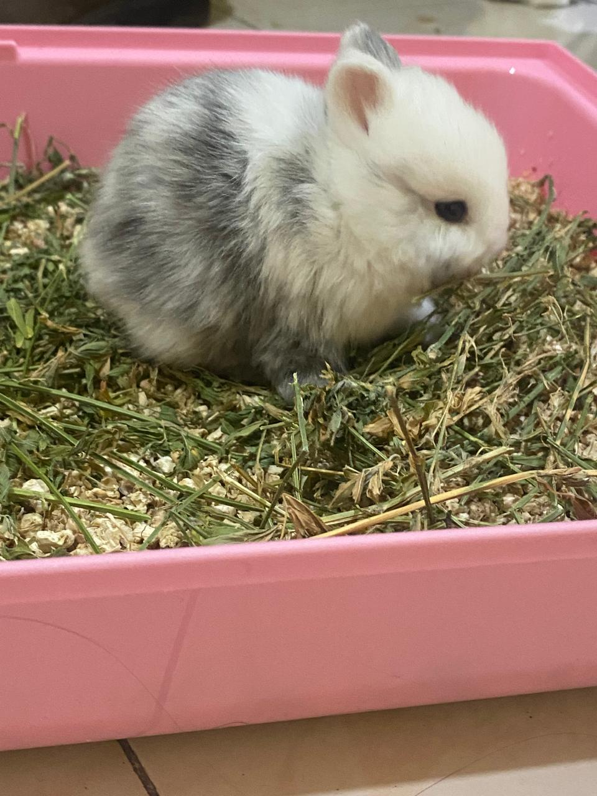
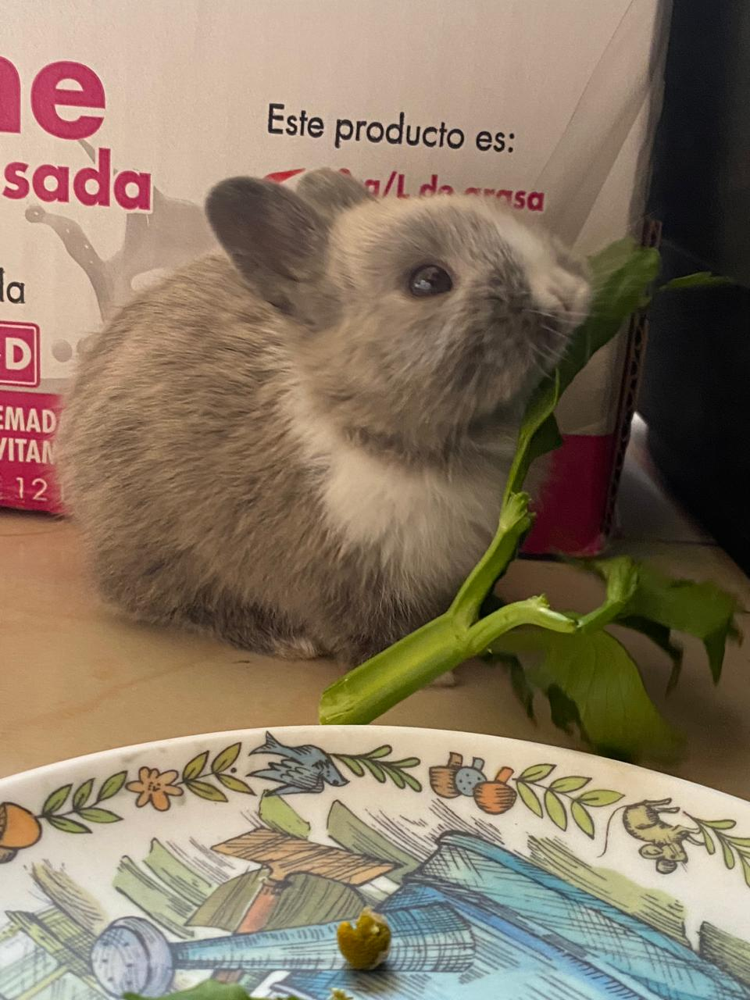
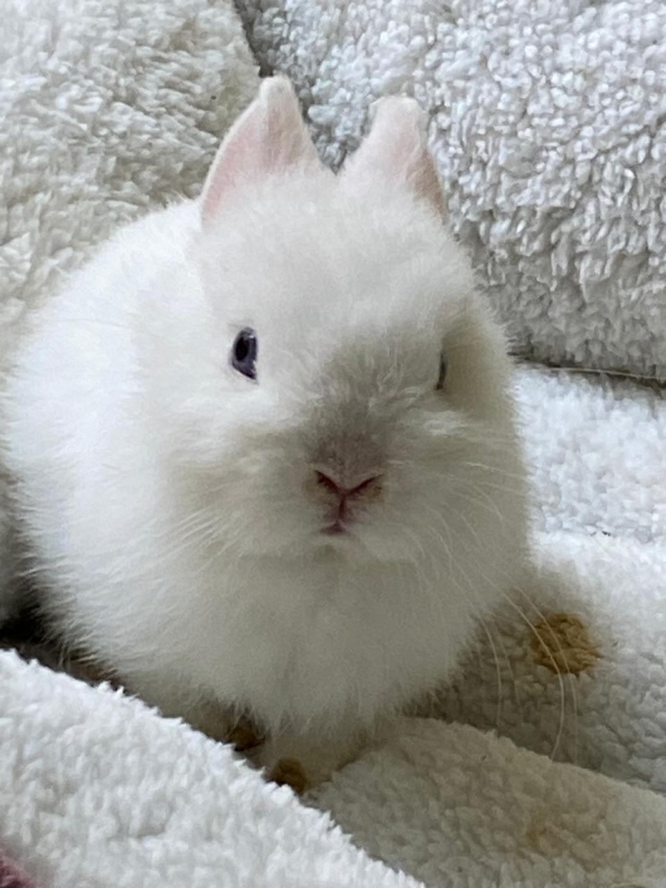

Miffy
Miffy fue mi primera conejita, estaba atravesando por una situacion dificil y llegó a alegrar mis días.

Cookie
Cookie fue mi segunda conejita, después de la partida de Miffy.

Taffy
Taffy llegó con Cookie, ya que ellas son hermanitas.

Cicy
Actualmente es la bebé de la casa, tiene 3 meses y es muy juguetona.